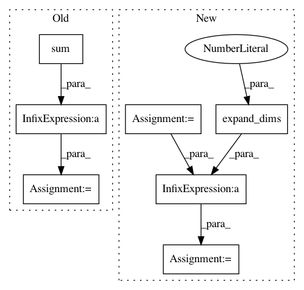

a1dd11c68e5911f069a747c917e2a4bfdd5ae4f4,geomstats/learning/em_expectation_maximization.py,RiemannianEM,update_variances,#RiemannianEM#Any#Any#Any#,131
Before Change
g_index].sum()
self.variances[:, g_index] = (self.normalization_factor.phi(dtm)).data.numpy()
else:
dtm = ((distance(z.unsqueeze(1).expand(N, M, D),
self.means.unsqueeze(0).expand(N, M, D)) ** 2) * wik).sum(0) / wik.sum(0)
// print("dtms ", dtm.size())
self.variances = (self.normalization_factor.phi(dtm)).data.numpy()
def _expectation(self, data):
After Change
else:
z_gs = gs.expand_dims(z.data.numpy(), 1)
z_gs = gs.repeat(z_gs,M,axis = 1)
means_gs = gs.expand_dims(self.means.data.numpy(),0)
means_gs = gs.repeat(means_gs,N,axis = 0)
z_torch = z.unsqueeze(1).expand(N, M, D)
means_torch = self.means.unsqueeze(0).expand(N, M, D)
wik_gs = wik.data.numpy()
dtm_gs = ((self.riemannian_metric.dist(z_gs,
means_gs) ** 2) * wik_gs).sum(0) / wik_gs.sum(0)
// dtm = ((distance(z.unsqueeze(1).expand(N, M, D),
// self.means.unsqueeze(0).expand(N, M, D)) ** 2) * wik).sum(0) / wik.sum(0)
In pattern: SUPERPATTERN
Frequency: 3
Non-data size: 7
Instances
Project Name: geomstats/geomstats
Commit Name: a1dd11c68e5911f069a747c917e2a4bfdd5ae4f4
Time: 2020-04-08
Author: hadizaatiti@gmail.com
File Name: geomstats/learning/em_expectation_maximization.py
Class Name: RiemannianEM
Method Name: update_variances
Project Name: IBM/adversarial-robustness-toolbox
Commit Name: a15f84b2b3ce0a8be7b57db42b048edba8b27e81
Time: 2019-09-09
Author: irinutza.n@gmail.com
File Name: art/attacks/virtual_adversarial.py
Class Name: VirtualAdversarialMethod
Method Name: _normalize
Project Name: scikit-learn-contrib/DESlib
Commit Name: 4abda80dd12518e6bfdc44d067566a3e6947e906
Time: 2018-03-28
Author: rafaelmenelau@gmail.com
File Name: deslib/dcs/a_priori.py
Class Name: APriori
Method Name: estimate_competence